Altstadt Düsseldorf
Düsseldorfer Pâtisserie.Seit 1846.
Gebacken wird für Cafés, Gastronomie und Catering — samstags auch für alle, die vorbeikommen.
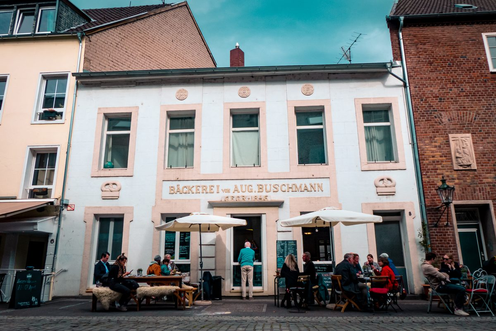
Buschmann 1846 ist eine Backstube in der Düsseldorfer Altstadt.
Hier entstehen Kuchen, Torten und Pâtisserie — für Cafés und Gastronomie, für Unternehmen und für private Feiern.
Geschichte
1846 fing alles in der Akademiestraße an.
August Buschmann eröffnete hier seine Backstube — dieselben Räume, in denen heute wieder gebacken wird. Sechs Generationen haben den Betrieb durch zwei Weltkriege getragen, zeitweise mit rund 120 Beschäftigten und fünf Standorten in Düsseldorf.
Gregor August Buschmann, direkter Nachfahre des Gründers, wuchs in der Altstadt auf und holte sich als Schüler der Maxschule nach dem Unterricht häufig ein Teilchen aus der Backstube. Nach Jahren als Koch, Küchenchef, Sous-Chef und Pâtissier in Düsseldorf und der Schweiz steht er seit Januar 2021 wieder dort, wo 1846 alles anfing.
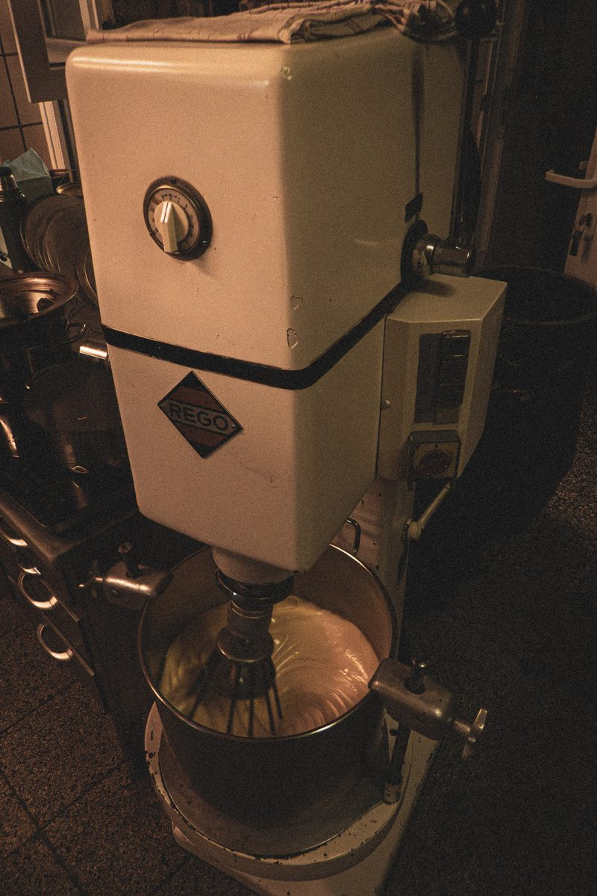
Sechs Generationen.
- 1846
August Buschmann gründet die Bäckerei und Backstube an der Akademiestraße.
- 1950
Das Café an der Flinger Straße öffnet nach dem Krieg wieder.
- 1970er
Rund 120 Menschen arbeiten zeitweise für Buschmann.
- 1980er
Bis Mitte des Jahrzehnts gehören fünf Düsseldorfer Standorte zum Unternehmen.
- 2021
Gregor Buschmann nimmt die Arbeit in der historischen Backstube wieder auf.
- Heute
Gebacken wird wieder an der Akademiestraße — für Düsseldorfer Cafés, für Gastronomie und für Gäste.
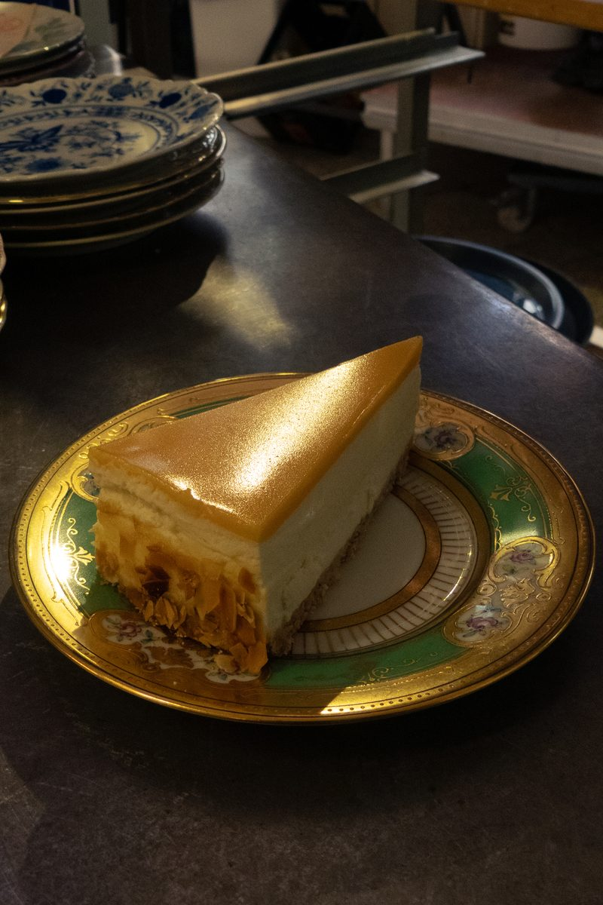
Pâtisserie
Kuchen, Torten, Pâtisserie.
Gebacken wird, was eine Backstube mit über hundertsiebzig Jahren Übung eben backt: Zitronen-Cheesecake mit Zitronenglasur, Torten mit Kirschfüllung, Sahne aus dem Kupferkessel. Serviert wird auf altem Porzellan — manches davon ist länger im Haus als die meisten Rezepte.
„Esst mehr Sahnetorte!“Gregor Buschmann, im Porträt von THE DORF
Die Backstube
Angerührt, gegossen, gestrichen, gebacken.
Maschinen, die seit Jahrzehnten ihren Dienst tun, und Handgriffe, die man keiner Maschine überlässt. Vieles davon geht schneller — aber nicht besser.
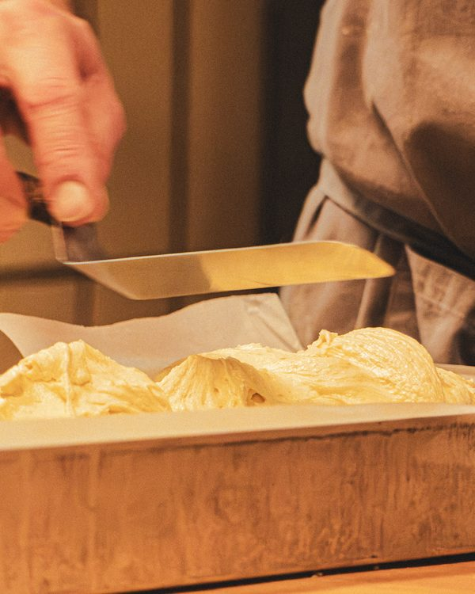
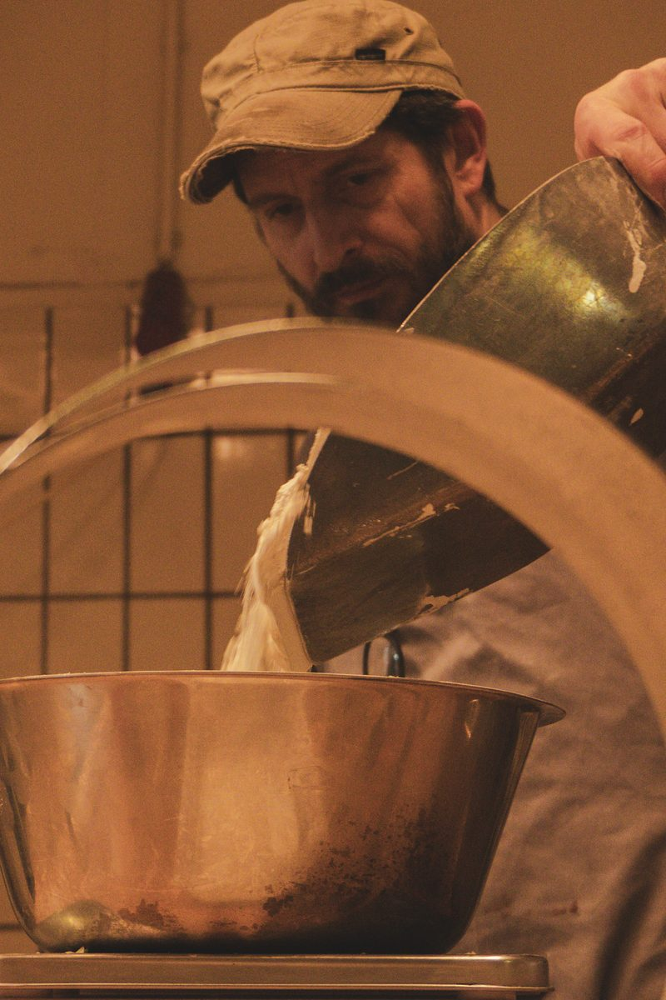
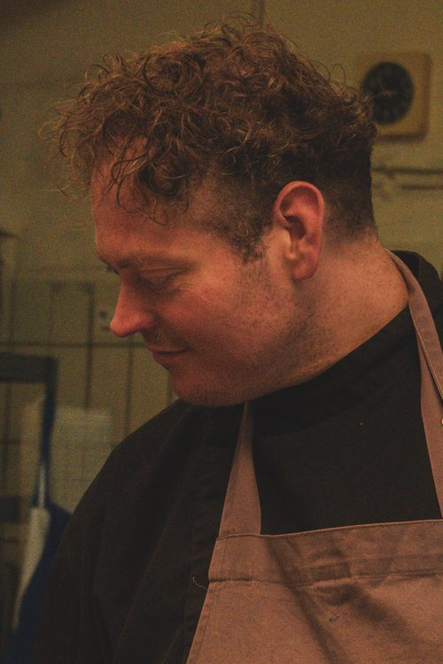
Tyll Schulte ist gelernter Koch und Konditor. Gemeinsam mit Gregor Buschmann sorgt er dafür, dass Kuchen, Torten und Pâtisserie fertig und lieferbereit sind.
Bildstrecke
Eine Woche in der Akademiestraße.
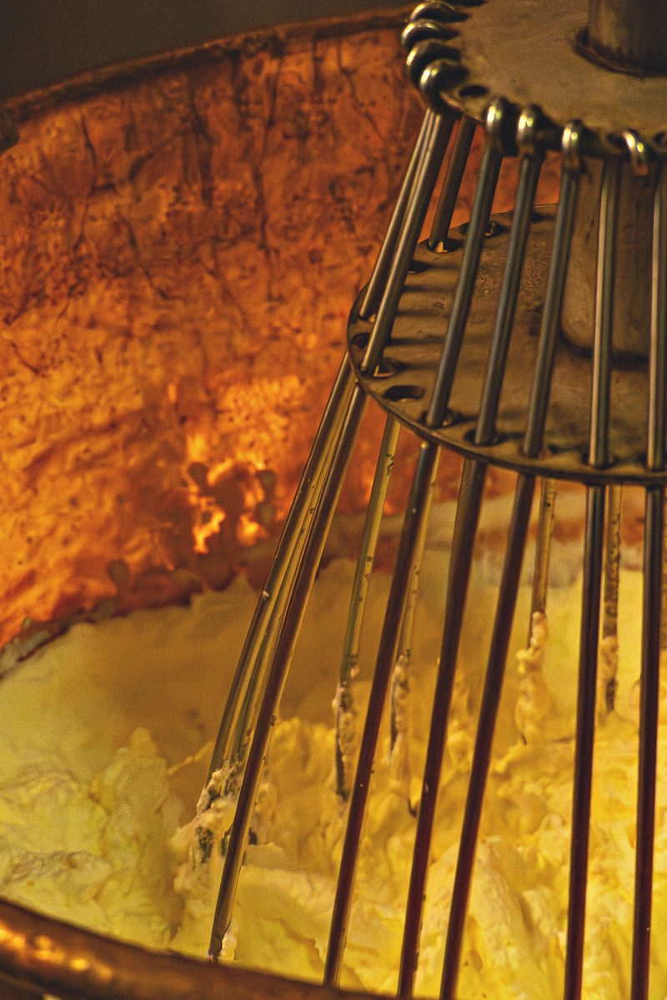
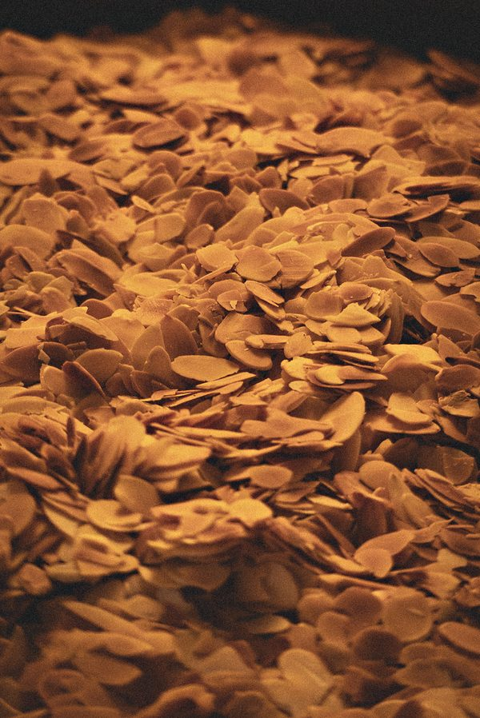
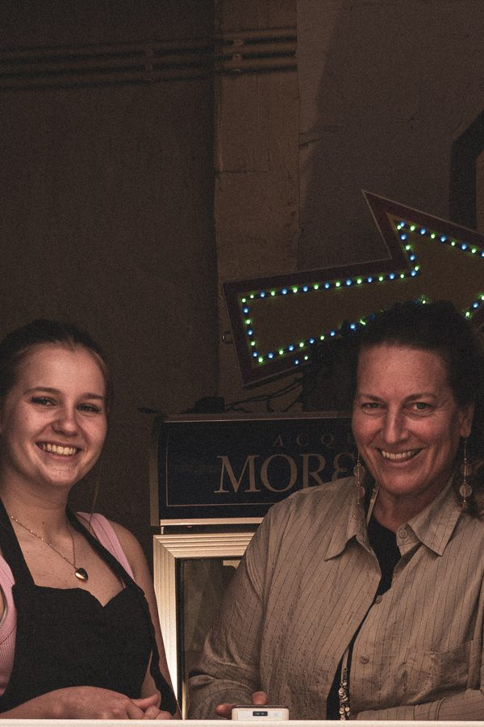
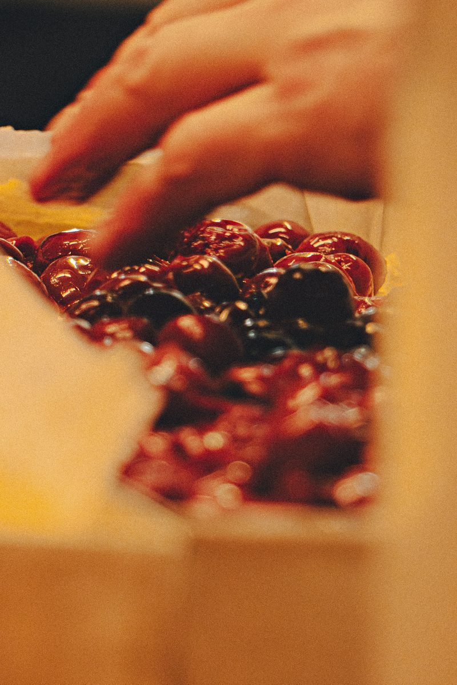
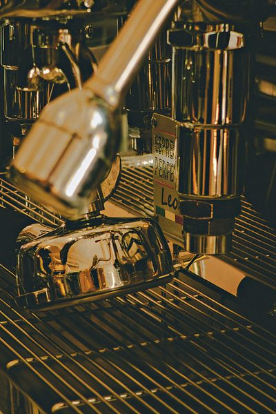
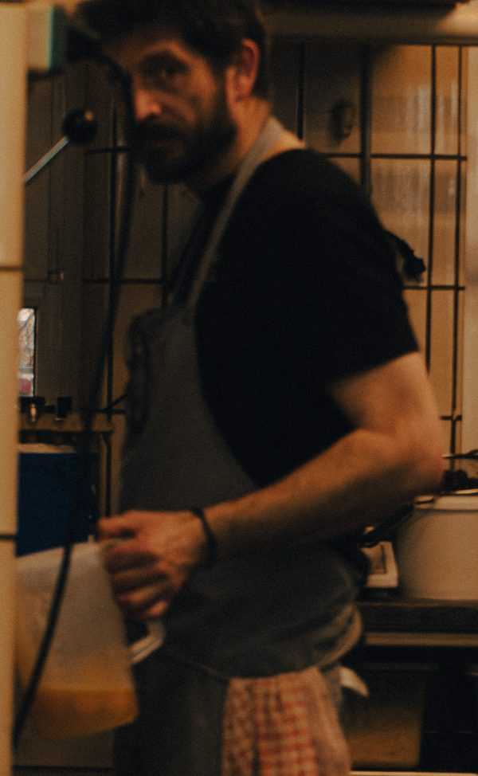
Catering
Für Cafés, Unternehmen und private Anlässe.
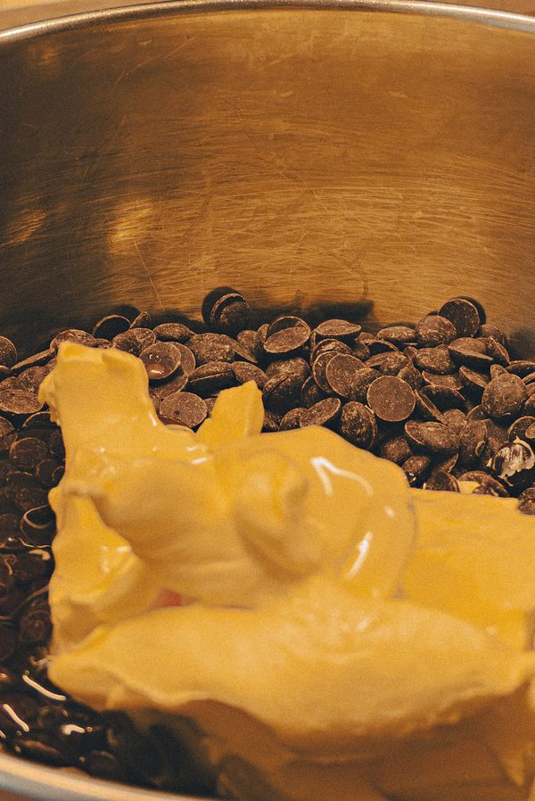
Gastronomie und Cafés
Kuchen, Torten und Pâtisserie für Betriebe, die nicht alles selbst backen können oder wollen — unter der Woche gebacken und ausgeliefert.
Unternehmen
Für Besprechungen, Empfänge und Feste. Bestellt wird nach Absprache, geliefert wird pünktlich.
Private Anlässe
Für Geburtstage und Feiern — nach Absprache und passend zum Anlass.
Geliefert wird in Düsseldorf Zum Standort
Samstags ist das Fenster offen.
Samstags gibt es von 12 bis 17 Uhr Kaffee und Kuchen. Draußen stehen Tische und Stühle bereit. Die Backstube selbst bleibt, was sie ist: Backstube.
Samstag · 12–17 Uhr Akademiestrasse 8, Altstadt
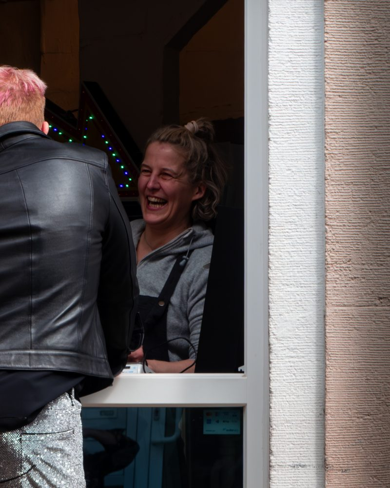
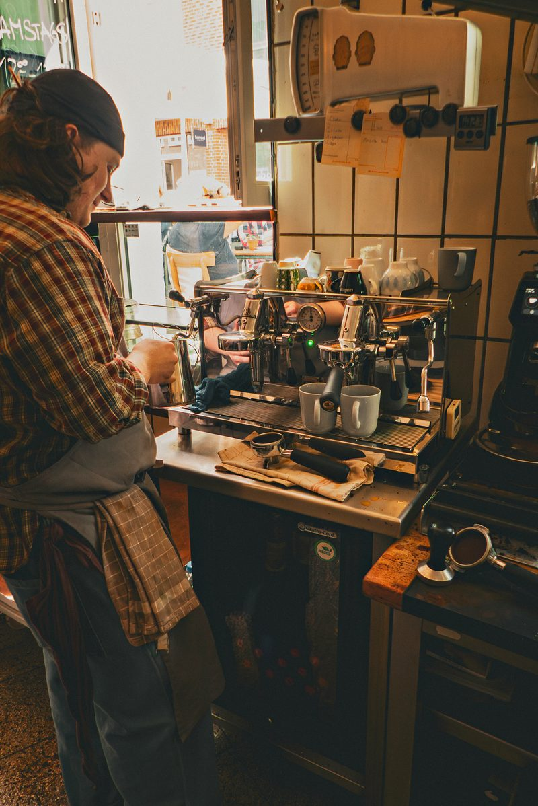
Claudia Fourmont behält Bestellungen und Organisation im Blick und bringt die fertigen Kuchen dorthin, wo sie gebraucht werden. Samstags gehört sie meist zu den vertrauten Gesichtern an der Ausgabe.
Standort
Akademiestraße 8.
Mitten in der Düsseldorfer Altstadt — dieselbe Adresse wie 1846.
Adresse
Buschmann 1846Akademiestraße 8
40213 Düsseldorf
Für Gäste
Samstags 12–17 UhrKaffee und Kuchen.
Folgen
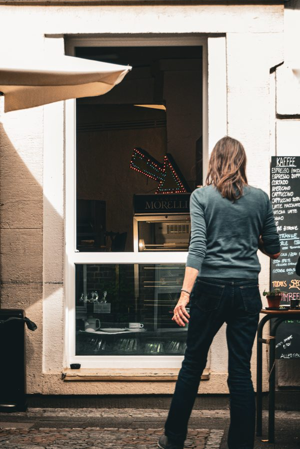